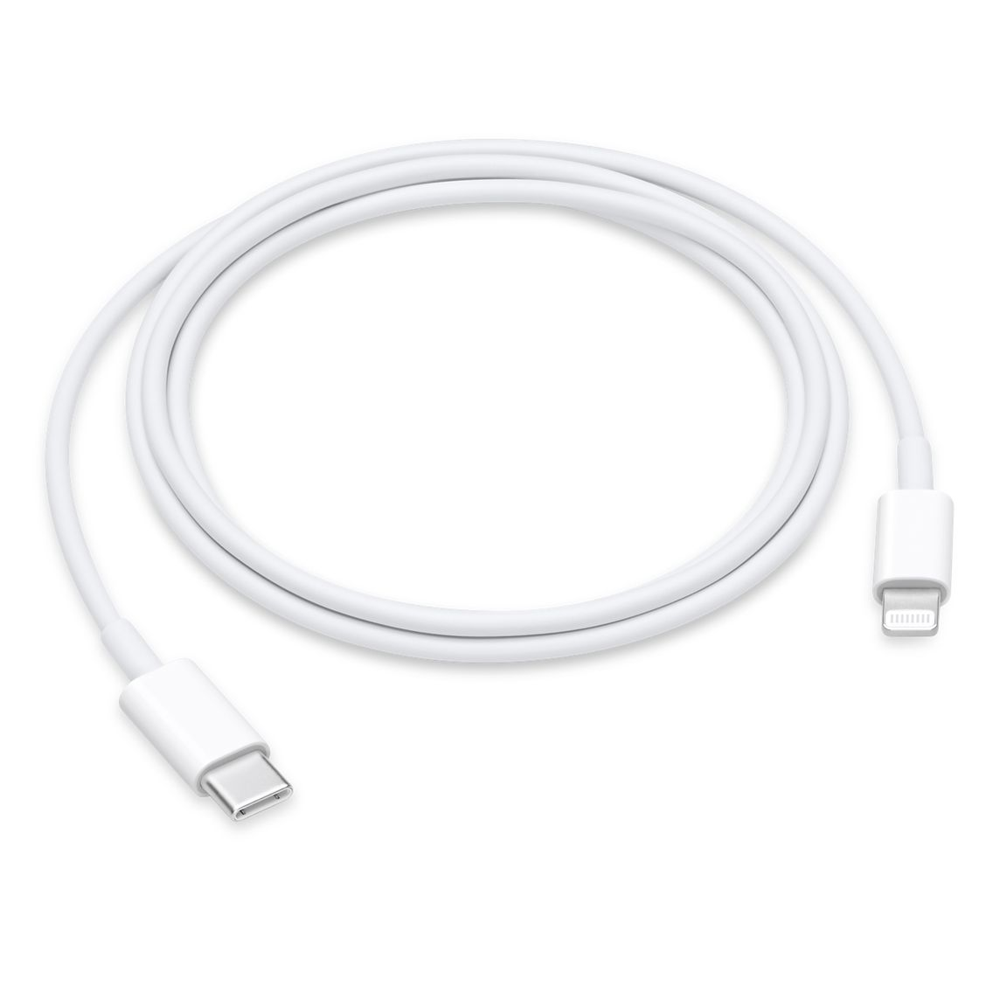

如何移除MDM流動裝置管理
*如果你的裝置已被鎖定iTunes連接電腦的功能，這個方法就不能使用，我們已在研發新方法。
*本教學只供學習研究使用，我們不建議任何人刪除公司或學校裝置上的MDM流動裝置管理。
1. 準備配備 USB 埠及搭載 Windows 7 或較新版本的 PC
2. 準備裝置電源線
3. 下載 iBackupBot

4. 使用連接線把裝置和電腦連接，在 iBackupBot 的側邊欄中選擇中選擇你的裝置

5. 選擇Backup Now

6. 選擇 Backup to iTunes's default backup folder

7. 等待備份完成

8. 備份完成後選取 "是"

9. 在側邊欄中擇剛才的備份
10. 選擇 System Files

11. 選擇 SysSharedContainerDomain-systemgroup.com.apple.configurationprofiles

12. 把整個文件夾移除

13. 再次在測邊欄中選取剛才的備份

14. 選擇 Restore Backup

15. 等待裝置回覆備份後， 查看裝置上的「設定」 >「一般」>「描述檔與裝置管理」檢查裝置是否已經移除MDM流動裝置管理
*Apple, the Apple logo, Apple TV, iPad, iPhone, iPod touch, iTunes, and Mac are trademarks of Apple Inc.
*iBackupBot is a registered trademark of VOW Software, Ltd.
*Windows, Microsoft️ Windows are trademarks or registered trademarks of Microsoft Corporation.
*對於非 Apple 製造產品，或者並非由 Apple 控制或測試的獨立網站，其相關資訊的提供不應詮釋為受到 Apple 所推薦或認可。
*本教學只供學習研究使用，我們不建議任何人刪除公司或學校裝置上的MDM流動裝置管理。
*如果以上教學令你的裝置出現任何問題，我們不會承擔任何責任。
發佈日期： 2021 年 11 月 25 日 01:22 AM UTC+08:00